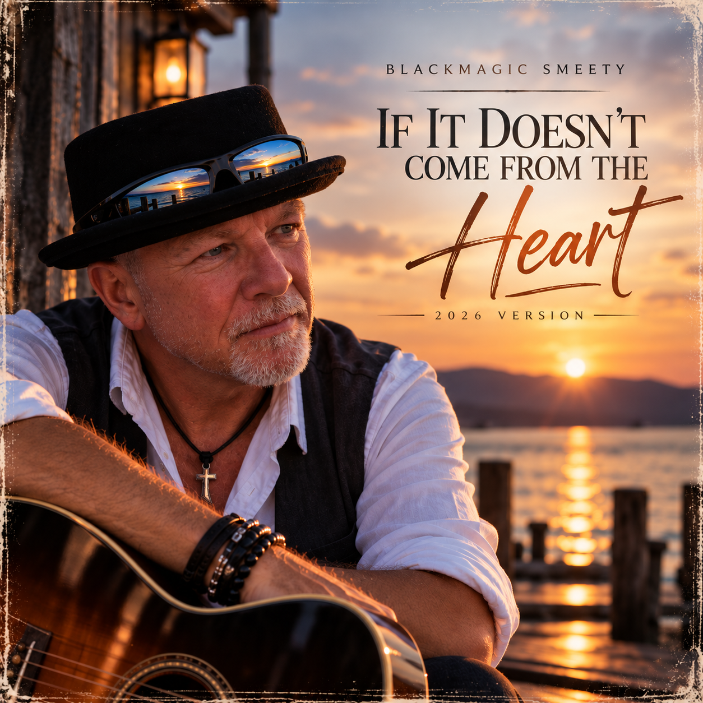

BLACKMAGIC SMEETY · SINGLE · 2026
IF IT DOESN'T COME FROM THE HEART
2026 VERSION
If It Doesn't Come from the Heart gehört zu meinen früheren Songs. Die Aussage dahinter ist für mich heute genauso wichtig wie damals – und dieser Song ist für all jene, die es genauso sehen und fühlen.